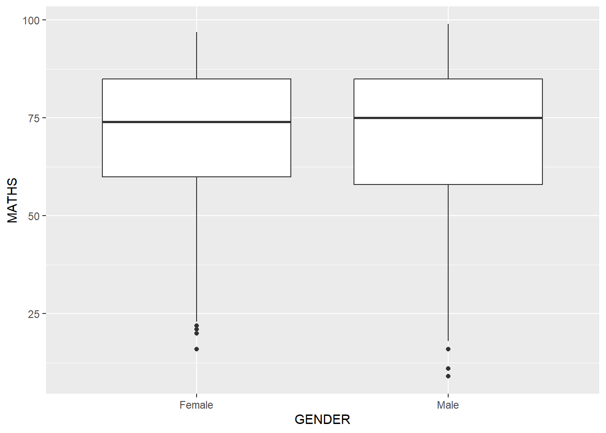
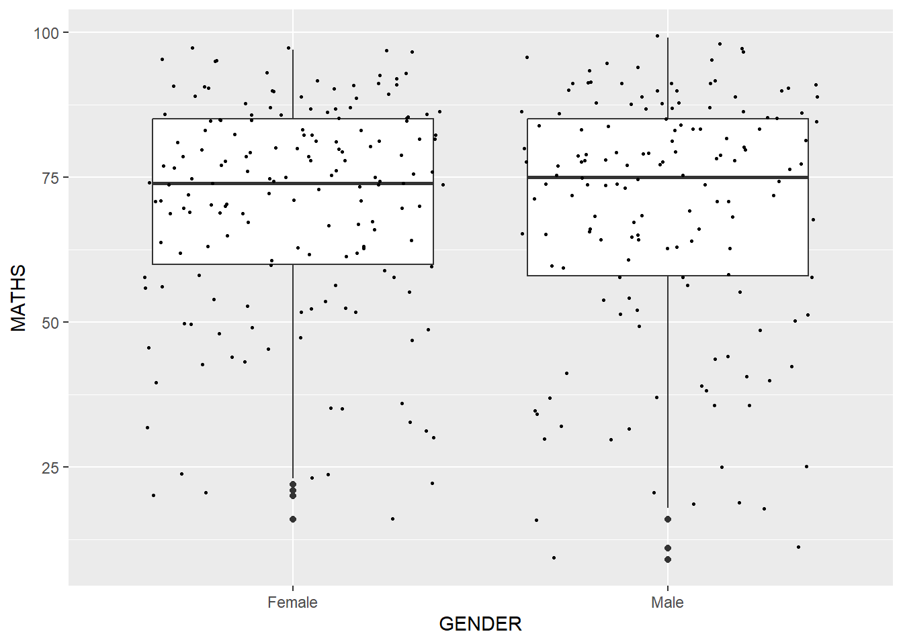

pacman::p_load(tidyverse)Hands-on Exercise 1
Getting Started
Install and launching R packages
The code chunk below uses p_load() of pacman package to check if tidyverse packages have been installed in the computer. If they are, then they will be launched into R.
Importing data
exam_data <- read_csv("data/Exam_data.csv")Rows: 322 Columns: 7
── Column specification ────────────────────────────────────────────────────────
Delimiter: ","
chr (4): ID, CLASS, GENDER, RACE
dbl (3): ENGLISH, MATHS, SCIENCE
ℹ Use `spec()` to retrieve the full column specification for this data.
ℹ Specify the column types or set `show_col_types = FALSE` to quiet this message.Exploring ggplot2
Bar Chart
ggplot(data = exam_data,
aes(x = RACE)) +
geom_bar()
Dotplot
ggplot(data = exam_data,
aes(x = MATHS)) +
geom_dotplot(binwidth = 2.5,
dotsize = 0.5) +
scale_y_continuous(NULL,
breaks = NULL)
Histogram
ggplot(data = exam_data,
aes(x = MATHS)) +
geom_histogram(bins = 20,
color = "black",
fill = "pink")ggplot(data = exam_data,
aes(x = MATHS,
fill = GENDER)) +
geom_histogram(bins = 20,
color = "black")Kernel Density Estimate
ggplot(data = exam_data,
aes(x = MATHS)) +
geom_density()
ggplot(data = exam_data,
aes(x = MATHS,
colour = GENDER)) +
geom_density()
Boxplot
ggplot(data = exam_data,
aes(y = MATHS,
x = GENDER)) +
geom_boxplot()
ggplot(data = exam_data,
aes(y = MATHS,
x = GENDER)) +
geom_boxplot(notch = TRUE)
Boxplot + Point
ggplot(data = exam_data,
aes(y = MATHS,
x = GENDER)) +
geom_boxplot() +
geom_point(position = "jitter",
size = 0.5)
Violin
ggplot(data = exam_data,
aes(y = MATHS,
x = GENDER)) +
geom_violin()
Violin + Boxplot
ggplot(data = exam_data,
aes(y = MATHS,
x = GENDER)) +
geom_violin(fill = "light yellow") +
geom_boxplot(alpha = 0.5)Scatter Plot (Point)
ggplot(data = exam_data,
aes(y = MATHS,
x = ENGLISH)) +
geom_point()Best Fit Curve
ggplot(data = exam_data,
aes(y = MATHS,
x = ENGLISH)) +
geom_point() +
geom_smooth(size = 0.5)Warning: Using `size` aesthetic for lines was deprecated in ggplot2 3.4.0.
ℹ Please use `linewidth` instead.`geom_smooth()` using method = 'loess' and formula = 'y ~ x'
Best Fit Line
ggplot(data = exam_data,
aes(y = MATHS,
x = ENGLISH)) +
geom_point() +
geom_smooth(method = lm, size = 0.5)`geom_smooth()` using formula = 'y ~ x'
Trellis Plot (Facet)
ggplot(data = exam_data,
aes(x = MATHS)) +
geom_histogram(bins = 20) +
facet_wrap(~ CLASS)
ggplot(data = exam_data,
aes(x = MATHS)) +
geom_histogram(bins = 20) +
facet_grid(~ CLASS)
ggplot(data = exam_data,
aes(y = MATHS,
x = CLASS)) +
geom_boxplot() +
facet_grid(~ GENDER)
ggplot(data = exam_data,
aes(y = MATHS,
x = CLASS)) +
geom_boxplot() +
facet_grid(GENDER ~.)
ggplot(data = exam_data,
aes(y = MATHS,
x = GENDER)) +
geom_boxplot() +
facet_grid(GENDER ~ CLASS)
Tips & Tricks
To only show code chunk without the corresponding plots, use #| eval: false

To only show plot without the corresponding code chunk, use #| echo: false